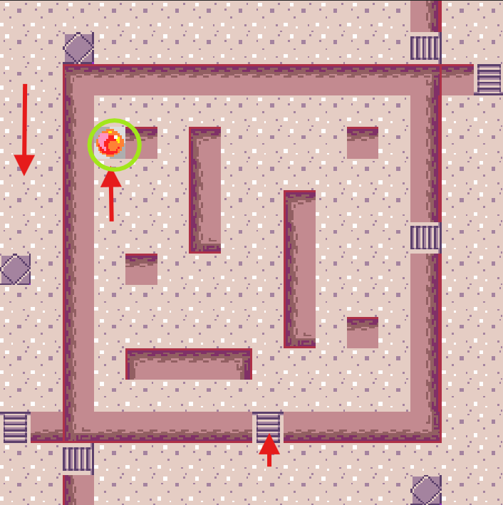
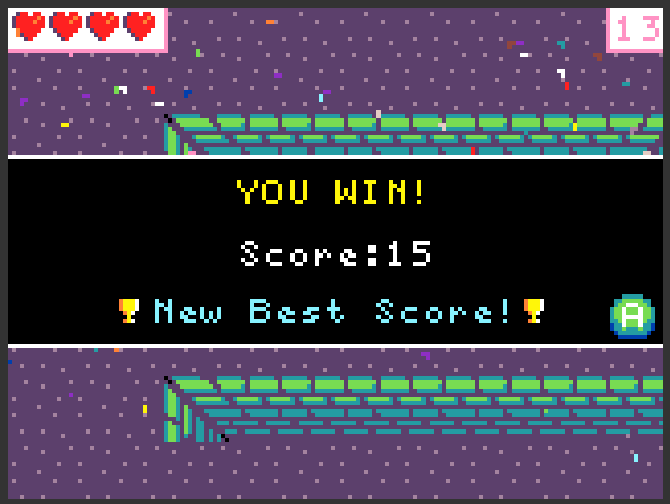

| Izena | Argazkia | Azalpena |
|---|---|---|
| Lehenengo mapa |  |
mapan zehar urrats hauek egin beharko dituzu mapa gainditzeko. Gainera hiru etsai egongop dira, eta hauek hiltzeko proiektilak bota beharko dituzu. Guzti honekin ez da nahikoa, gemak hartu behar direlako. Guzti honekin ahalko ziñen hurrengo mapara pasa. |
| Bigarren mapa |  |
Bigarren mapan hainbat kontxa hartu beharko ditzu eta gainera bi etsai hil beharko dituzu. Hauetako bat Final Bossa da eta honek bizitza barra du, hau da hainbat aldiz jo beharko duzu hiltzeko. Etsai nagusi hau maparen erdialdean egoten da gehienetan, horregatik gomendagarria da iskinetatik joatea kontxak hartzen eta amaieran etsai nagusiaren aurka borrokatzea. |
| Amaitu da!!! |  |
Zorionakkk!!! jolasa pasatzea lortu duzu! |